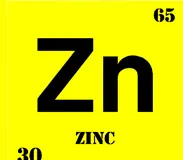

Night bathroom visits
When you wake again and again, the night feels too short and the morning starts heavy.
Men's prostate comfort support
Proman helps men 40+ support stronger urinary comfort, better bladder emptying, steady energy and the confidence to feel close again.
Proman helps men 40+ support stronger urinary comfort, better bladder emptying, steady energy and the confidence to feel close again.
Proman helps men 40+ support stronger urinary comfort, better bladder emptying, steady energy and the confidence to feel close again.
Restore peaceful nights
At first, it may seem like just one extra trip to the bathroom. Then it becomes two. Then three. Soon, sleep is broken, the stream feels weaker, the bladder does not feel fully empty, and confidence is no longer the same.
Proman was created to help men support urinary comfort naturally, wake less often at night, and feel more steady after 40.
Problem recognition
When you wake again and again, the night feels too short and the morning starts heavy.
More peaceful sleep can help you wake with better energy and a clearer head.
Poor rest can leave you slower, less focused, and less active with work, family and travel.
Better comfort can help bring back the confidence, closeness and ease you remember.
Why men choose Proman
Made with plant extracts and nutrients selected for daily men's wellness.
Made for men who want calmer nights, a stronger stream, more complete emptying, and simple support.
A simple routine you can keep without changing your whole day.
Order from home and confirm delivery by phone before dispatch.
Why daily support matters
After 40, many men notice weaker flow, more night trips, and the feeling that the bladder is not fully empty. Daily support can help you feel more comfortable, sleep better, regain energy, and stay confident.

Proman
Proman is for men who want natural daily support without making life complicated. The goal is simple: fewer night interruptions, stronger urinary comfort, better energy, and more confidence in everyday life and intimacy.
How it works
Leave your name and phone number in the secure form.
A specialist calls to confirm your details and delivery location.
Add Proman to your routine as directed on the package.
Plant-based formula

Traditionally used to support natural balance and everyday comfort.

An essential mineral that helps maintain normal men's health.

A familiar plant extract used to support vitality and daily wellness.
Supports normal circulation and an active lifestyle routine.
Helps support normal energy metabolism for daily activity.

A plant extract traditionally used to support tone and alertness.
Customer experiences
 Chinedu, 56
Chinedu, 56
"I used to wake up several times every night. Now my nights feel calmer and I wake up more rested."
 Babatunde, 61
Babatunde, 61
"I wanted something natural that fit my routine. Ordering was simple, and I felt more control and confidence."
"Better nights helped me feel more active during the day. My energy came back little by little."
"The main thing for me was comfort. I do not think about the toilet all night like before."
"My sleep used to feel broken. Now my mornings feel calmer, and I have more energy and confidence."
Limited offer
One simple order can help you begin supporting fewer night trips, a steadier stream, more complete emptying, and renewed confidence. Confirm by phone and pay when your package arrives.
Special Nigeria Offer
Regular Price 99,000 NGN
Save 50%
TODAY 49,000 NGN
FAQ
Proman is made with natural plant extracts and supportive nutrients selected for men's daily wellness routines.
Use Proman as directed on the package. A specialist can explain the routine when confirming your order.
Delivery time depends on your location in Nigeria. The operator confirms timing by phone before dispatch.
Yes. Proman is designed for men 40+ who want daily support for prostate comfort and confidence.
Results may vary from person to person. Many users notice improvements after regular use as directed.
Secure order
Leave your details below and take the first step toward better sleep, fewer night bathroom trips, stronger flow, and more confidence. A specialist will call to confirm your order and delivery location.
Available for a limited time while supplies last.
Regular Price 99,000 NGN
TODAY 49,000 NGN